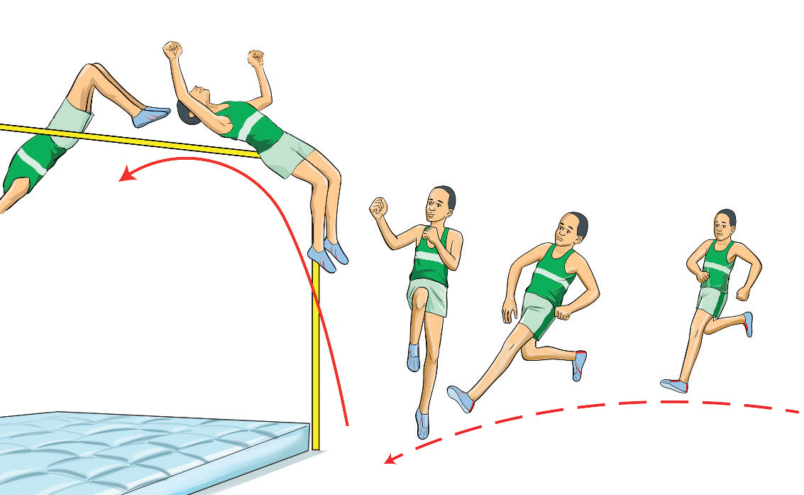

a b c d eRules and regulations for high jump
Rules are essential for maintaining standards and fairness in the events as well as safety of the athletes before and during events. These are some rules that guide jumping events:
-
1.
The jump: The athlete shall take-off using only one leg, and the jumping height is decided by the chief judge;
-
2.
Jumping area: The runway shall be 15 m long and 16 m wide with a level take-off placed between the upright spaced 4 m in the midway of the runway. The crossbar shall be cylindrical and hollow with tapered ends placed on the uprights. The landing area shall not be smaller than 6 m x 4 m wide and 0.7 m high;
-
3.
Officials: There will be the chief judge, landing judge, crossbar judge, recorder judge, scoreboard judge, clock judge and judge in charge of athlete;
-
4.
Athlete’s trial: The athlete shall be entitled to three trials of bar clearance;
-
5.
A foul: an attempt is failed if:
- (i) The jumper knocks the bar off its support.
- (ii) The jumper fails to take off on one foot.
- (iii) The jumper steps outside the take-off area before or after the jump.
- (iv) The athlete exceeds the time limit for the attempt.
- (v) The jumper misses all three attempts at a given height.
SPORTS STUDIES FORM TWO.indd 70
9/17/25 9:54 AM